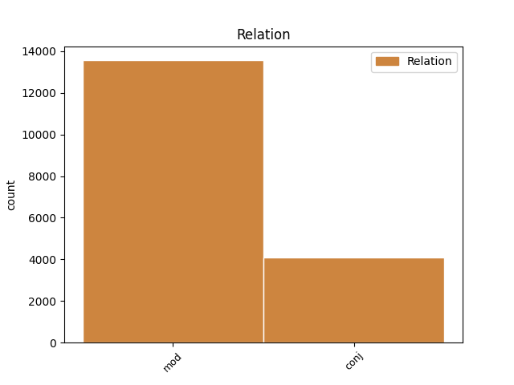

Distribution of features within this leaf


Agreement Rules sorted by frequency.
- When the dependent token is the modifer(mod) of the head token, and the head token is NOUN and the dependent token is NOUN.
1 est _ _ _ _ 0 _ _ _
2 autem _ _ _ _ 0 _ _ _
3 attendendum _ _ _ _ 0 _ _ _
4 quod _ _ _ _ 0 _ _ _
5 , _ _ _ _ 0 _ _ _
6 si _ _ _ _ 0 _ _ _
7 quis _ _ _ _ 0 _ _ _
8 poneret _ _ _ _ 0 _ _ _
9 animam _ _ _ _ 0 _ _ _
10 componi _ _ _ _ 0 _ _ _
11 ex _ _ _ _ 0 _ _ _
12 materia _ _ _ _ 0 _ _ _
13 et _ _ _ _ 0 _ _ _
14 forma _ _ _ _ 0 _ _ _
15 , _ _ _ _ 0 _ _ _
16 nullo _ _ _ _ 0 _ _ _
17 modo _ _ _ _ 0 _ _ _
18 posset _ _ _ _ 0 _ _ _
19 dicere _ _ _ _ 0 _ _ _
20 animam _ _ _ _ 0 _ _ _
21 esse _ _ _ _ 0 _ _ _
22 formam forma NOUN A1|grn1|casD|gen2 Case=Acc|Degree=Pos|Gender=Fem|Number=Sing 0 _ _ _
23 corporis corpus NOUN C1|grn1|casB|gen3 Case=Gen|Degree=Pos|Gender=Neut|Number=Sing 22 mod _ SpaceAfter=No
24 . _ _ _ _ 0 _ _ _
1 cum _ _ _ _ 0 _ _ _
2 enim _ _ _ _ 0 _ _ _
3 forma _ _ _ _ 0 _ _ _
4 sit _ _ _ _ 0 _ _ _
5 actus _ _ _ _ 0 _ _ _
6 , _ _ _ _ 0 _ _ _
7 materia _ _ _ _ 0 _ _ _
8 vero _ _ _ _ 0 _ _ _
9 sit _ _ _ _ 0 _ _ _
10 ens _ _ _ _ 0 _ _ _
11 in _ _ _ _ 0 _ _ _
12 potentia _ _ _ _ 0 _ _ _
13 tantum _ _ _ _ 0 _ _ _
14 ; _ _ _ _ 0 _ _ _
15 nullo _ _ _ _ 0 _ _ _
16 modo _ _ _ _ 0 _ _ _
17 id _ _ _ _ 0 _ _ _
18 quod _ _ _ _ 0 _ _ _
19 est _ _ _ _ 0 _ _ _
20 ex _ _ _ _ 0 _ _ _
21 materia materia NOUN A1|grn1|casF|gen2 Case=Abl|Degree=Pos|Gender=Fem|Number=Sing 0 _ _ _
22 et _ _ _ _ 0 _ _ _
23 forma forma NOUN A1|grn1|casF|gen2 Case=Abl|Degree=Pos|Gender=Fem|Number=Sing 21 conj _ _
24 compositum _ _ _ _ 0 _ _ _
25 , _ _ _ _ 0 _ _ _
26 potest _ _ _ _ 0 _ _ _
27 esse _ _ _ _ 0 _ _ _
28 alterius _ _ _ _ 0 _ _ _
29 forma _ _ _ _ 0 _ _ _
30 secundum _ _ _ _ 0 _ _ _
31 se _ _ _ _ 0 _ _ _
32 totum _ _ _ _ 0 _ _ _
33 . _ _ _ _ 0 _ _ _
1 si _ _ _ _ 0 _ _ _
2 autem _ _ _ _ 0 _ _ _
3 secundum _ _ _ _ 0 _ _ _
4 aliquid _ _ _ _ 0 _ _ _
5 sui _ _ _ _ 0 _ _ _
6 sit _ _ _ _ 0 _ _ _
7 forma _ _ _ _ 0 _ _ _
8 , _ _ _ _ 0 _ _ _
9 id _ _ _ _ 0 _ _ _
10 quod _ _ _ _ 0 _ _ _
11 est _ _ _ _ 0 _ _ _
12 forma _ _ _ _ 0 _ _ _
13 dicimus _ _ _ _ 0 _ _ _
14 animam _ _ _ _ 0 _ _ _
15 , _ _ _ _ 0 _ _ _
16 et _ _ _ _ 0 _ _ _
17 id _ _ _ _ 0 _ _ _
18 cuius qui PRON F1|grn1|casB|gen3|vgr2 Case=Gen|Degree=Pos|Gender=Neut|Number=Sing|PronType=Rel 20 mod _ _
19 est _ _ _ _ 0 _ _ _
20 forma forma NOUN A1|grn1|casA|gen2 Case=Nom|Degree=Pos|Gender=Fem|Number=Sing 0 _ _ _
21 dicimus _ _ _ _ 0 _ _ _
22 primum _ _ _ _ 0 _ _ _
23 animatum _ _ _ _ 0 _ _ _
24 , _ _ _ _ 0 _ _ _
25 ut _ _ _ _ 0 _ _ _
26 supra _ _ _ _ 0 _ _ _
27 dictum _ _ _ _ 0 _ _ _
28 est _ _ _ _ 0 _ _ _
29 . _ _ _ _ 0 _ _ _
1 non _ _ _ _ 0 _ _ _
2 enim _ _ _ _ 0 _ _ _
3 potest _ _ _ _ 0 _ _ _
4 intelligi _ _ _ _ 0 _ _ _
5 quod _ _ _ _ 0 _ _ _
6 aliqua _ _ _ _ 0 _ _ _
7 forma _ _ _ _ 0 _ _ _
8 separata _ _ _ _ 0 _ _ _
9 sit _ _ _ _ 0 _ _ _
10 nisi _ _ _ _ 0 _ _ _
11 una _ _ _ _ 0 _ _ _
12 unius unus NUM F1|grn1|casB|gen2|vgr2 Case=Gen|Degree=Pos|Gender=Fem|Number=Sing|NumType=Card 13 mod _ _
13 speciei species NOUN E1|grn1|casB|gen2 Case=Gen|Degree=Pos|Gender=Fem|Number=Sing 0 _ _ _
14 , _ _ _ _ 0 _ _ _
15 sicut _ _ _ _ 0 _ _ _
16 si _ _ _ _ 0 _ _ _
17 esset _ _ _ _ 0 _ _ _
18 albedo _ _ _ _ 0 _ _ _
19 separata _ _ _ _ 0 _ _ _
20 , _ _ _ _ 0 _ _ _
21 non _ _ _ _ 0 _ _ _
22 posset _ _ _ _ 0 _ _ _
23 esse _ _ _ _ 0 _ _ _
24 nisi _ _ _ _ 0 _ _ _
25 una _ _ _ _ 0 _ _ _
26 tantum _ _ _ _ 0 _ _ _
27 ; _ _ _ _ 0 _ _ _
1 sicut _ _ _ _ 0 _ _ _
2 autem _ _ _ _ 0 _ _ _
3 formatio _ _ _ _ 0 _ _ _
4 artificiatorum _ _ _ _ 0 _ _ _
5 est _ _ _ _ 0 _ _ _
6 per _ _ _ _ 0 _ _ _
7 formam _ _ _ _ 0 _ _ _
8 artis _ _ _ _ 0 _ _ _
9 quae _ _ _ _ 0 _ _ _
10 est _ _ _ _ 0 _ _ _
11 in _ _ _ _ 0 _ _ _
12 mente _ _ _ _ 0 _ _ _
13 artificis _ _ _ _ 0 _ _ _
14 , _ _ _ _ 0 _ _ _
15 quae _ _ _ _ 0 _ _ _
16 potest _ _ _ _ 0 _ _ _
17 dici _ _ _ _ 0 _ _ _
18 intelligibile _ _ _ _ 0 _ _ _
19 verbum _ _ _ _ 0 _ _ _
20 ipsius _ _ _ _ 0 _ _ _
21 ; _ _ _ _ 0 _ _ _
22 ita _ _ _ _ 0 _ _ _
23 formatio _ _ _ _ 0 _ _ _
24 totius _ _ _ _ 0 _ _ _
25 creaturae _ _ _ _ 0 _ _ _
26 est _ _ _ _ 0 _ _ _
27 per _ _ _ _ 0 _ _ _
28 verbum verbum NOUN B1|grn1|casD|gen3|vgr1 Case=Acc|Degree=Pos|Gender=Neut|Number=Sing 0 _ _ _
29 dei deus PROPN F1|grn1|casB|gen1 Case=Gen|Degree=Pos|Gender=Masc|Number=Sing 28 mod _ SpaceAfter=No
30 . _ _ _ _ 0 _ _ _
1 relinquitur _ _ _ _ 0 _ _ _
2 ergo _ _ _ _ 0 _ _ _
3 quod _ _ _ _ 0 _ _ _
4 intellectivum _ _ _ _ 0 _ _ _
5 principium _ _ _ _ 0 _ _ _
6 sit _ _ _ _ 0 _ _ _
7 propria proprius ADJ A1|grn1|casA|gen2 Case=Nom|Degree=Pos|Gender=Fem|Number=Sing 0 _ _ _
8 hominis homo NOUN C1|grn1|casB|gen1 Case=Gen|Degree=Pos|Gender=Masc|Number=Sing 7 mod _ _
9 forma _ _ _ _ 0 _ _ _
10 . _ _ _ _ 0 _ _ _
1 sed _ _ _ _ 0 _ _ _
2 prius _ _ _ _ 0 _ _ _
3 erat _ _ _ _ 0 _ _ _
4 informis _ _ _ _ 0 _ _ _
5 , _ _ _ _ 0 _ _ _
6 et _ _ _ _ 0 _ _ _
7 nunc _ _ _ _ 0 _ _ _
8 formatur formo VERB J3|modJ|tem1|gen6 Mood=Ind|Number=Sing|Person=3|Tense=Pres|VerbForm=Fin|Voice=Pass 0 _ _ _
9 ; _ _ _ _ 0 _ _ _
10 non _ _ _ _ 0 _ _ _
11 quidem _ _ _ _ 0 _ _ _
12 forma forma NOUN A1|grn1|casF|gen2 Case=Abl|Degree=Pos|Gender=Fem|Number=Sing 8 conj _ _
13 substantiali _ _ _ _ 0 _ _ _
14 , _ _ _ _ 0 _ _ _
15 sed _ _ _ _ 0 _ _ _
16 per _ _ _ _ 0 _ _ _
17 collationem _ _ _ _ 0 _ _ _
18 determinatae _ _ _ _ 0 _ _ _
19 virtutis _ _ _ _ 0 _ _ _
20 . _ _ _ _ 0 _ _ _
1 sed _ _ _ _ 0 _ _ _
2 formae _ _ _ _ 0 _ _ _
3 secundum _ _ _ _ 0 _ _ _
4 se _ _ _ _ 0 _ _ _
5 inest insum VERB N3|modA|tem1|gen6 Mood=Ind|Number=Sing|Person=3|Tense=Pres|VerbForm=Fin|Voice=Act 0 _ _ _
6 uniri _ _ _ _ 0 _ _ _
7 materiae _ _ _ _ 0 _ _ _
8 , _ _ _ _ 0 _ _ _
9 non _ _ _ _ 0 _ _ _
10 enim _ _ _ _ 0 _ _ _
11 per _ _ _ _ 0 _ _ _
12 accidens _ _ _ _ 0 _ _ _
13 aliquod _ _ _ _ 0 _ _ _
14 , _ _ _ _ 0 _ _ _
15 sed _ _ _ _ 0 _ _ _
16 per _ _ _ _ 0 _ _ _
17 essentiam _ _ _ _ 0 _ _ _
18 suam _ _ _ _ 0 _ _ _
19 est sum AUX N3|modA|tem1|gen6 Mood=Ind|Number=Sing|Person=3|Tense=Pres|VerbForm=Fin|Voice=Act 5 conj _ _
20 actus _ _ _ _ 0 _ _ _
21 materiae _ _ _ _ 0 _ _ _
22 ; _ _ _ _ 0 _ _ _
1 contrarium _ _ _ _ 0 _ _ _
2 igitur _ _ _ _ 0 _ _ _
3 resistit _ _ _ _ 0 _ _ _
4 agenti _ _ _ _ 0 _ _ _
5 , _ _ _ _ 0 _ _ _
6 inquantum _ _ _ _ 0 _ _ _
7 impedit _ _ _ _ 0 _ _ _
8 potentiam _ _ _ _ 0 _ _ _
9 ab _ _ _ _ 0 _ _ _
10 actu _ _ _ _ 0 _ _ _
11 in _ _ _ _ 0 _ _ _
12 quem _ _ _ _ 0 _ _ _
13 intendit _ _ _ _ 0 _ _ _
14 reducere _ _ _ _ 0 _ _ _
15 agens _ _ _ _ 0 _ _ _
16 , _ _ _ _ 0 _ _ _
17 sicut _ _ _ _ 0 _ _ _
18 ignis _ _ _ _ 0 _ _ _
19 intendit _ _ _ _ 0 _ _ _
20 reducere _ _ _ _ 0 _ _ _
21 materiam _ _ _ _ 0 _ _ _
22 aquae _ _ _ _ 0 _ _ _
23 in _ _ _ _ 0 _ _ _
24 actum _ _ _ _ 0 _ _ _
25 sibi se PRON F1|grn1|casC|gen1 Case=Dat|Degree=Pos|Gender=Masc|Number=Sing|PronType=Prs|Reflex=Yes 26 mod _ _
26 similem similis ADJ C1|grn1|casD|gen1 Case=Acc|Degree=Pos|Gender=Masc|Number=Sing 0 _ _ _
27 , _ _ _ _ 0 _ _ _
28 sed _ _ _ _ 0 _ _ _
29 impeditur _ _ _ _ 0 _ _ _
30 per _ _ _ _ 0 _ _ _
31 formam _ _ _ _ 0 _ _ _
32 et _ _ _ _ 0 _ _ _
33 dispositiones _ _ _ _ 0 _ _ _
34 contrarias _ _ _ _ 0 _ _ _
35 , _ _ _ _ 0 _ _ _
36 quibus _ _ _ _ 0 _ _ _
37 quasi _ _ _ _ 0 _ _ _
38 ligatur _ _ _ _ 0 _ _ _
39 potentia _ _ _ _ 0 _ _ _
40 ne _ _ _ _ 0 _ _ _
41 reducatur _ _ _ _ 0 _ _ _
42 in _ _ _ _ 0 _ _ _
43 actum _ _ _ _ 0 _ _ _
44 . _ _ _ _ 0 _ _ _
1 et _ _ _ _ 0 _ _ _
2 inde _ _ _ _ 0 _ _ _
3 est _ _ _ _ 0 _ _ _
4 quod _ _ _ _ 0 _ _ _
5 in _ _ _ _ 0 _ _ _
6 rebus _ _ _ _ 0 _ _ _
7 corruptibilibus _ _ _ _ 0 _ _ _
8 forma _ _ _ _ 0 _ _ _
9 non _ _ _ _ 0 _ _ _
10 perfecte _ _ _ _ 0 _ _ _
11 complet _ _ _ _ 0 _ _ _
12 potentiam _ _ _ _ 0 _ _ _
13 materiae _ _ _ _ 0 _ _ _
14 , _ _ _ _ 0 _ _ _
15 quia _ _ _ _ 0 _ _ _
16 potentia _ _ _ _ 0 _ _ _
17 materiae _ _ _ _ 0 _ _ _
18 ad _ _ _ _ 0 _ _ _
19 plura _ _ _ _ 0 _ _ _
20 se _ _ _ _ 0 _ _ _
21 extendit _ _ _ _ 0 _ _ _
22 quam _ _ _ _ 0 _ _ _
23 sit _ _ _ _ 0 _ _ _
24 continentia _ _ _ _ 0 _ _ _
25 formae _ _ _ _ 0 _ _ _
26 huius hic PRON F1|grn1|casB|gen2|vgr2 Case=Gen|Degree=Pos|Gender=Fem|Number=Sing|PronType=Dem 0 _ _ _
27 vel _ _ _ _ 0 _ _ _
28 illius ille PRON F1|grn1|casB|gen2 Case=Gen|Degree=Pos|Gender=Fem|Number=Sing|PronType=Dem 26 conj _ SpaceAfter=No
29 . _ _ _ _ 0 _ _ _
1 anima _ _ _ _ 0 _ _ _
2 igitur _ _ _ _ 0 _ _ _
3 intellectiva _ _ _ _ 0 _ _ _
4 est _ _ _ _ 0 _ _ _
5 forma forma NOUN A1|grn1|casA|gen2 Case=Nom|Degree=Pos|Gender=Fem|Number=Sing 0 _ _ _
6 absoluta _ _ _ _ 0 _ _ _
7 , _ _ _ _ 0 _ _ _
8 non _ _ _ _ 0 _ _ _
9 autem _ _ _ _ 0 _ _ _
10 aliquid aliquis PRON F1|grn1|casA|gen3 Case=Nom|Degree=Pos|Gender=Neut|Number=Sing|PronType=Ind 5 conj _ _
11 compositum _ _ _ _ 0 _ _ _
12 ex _ _ _ _ 0 _ _ _
13 materia _ _ _ _ 0 _ _ _
14 et _ _ _ _ 0 _ _ _
15 forma _ _ _ _ 0 _ _ _
16 . _ _ _ _ 0 _ _ _
1 sed _ _ _ _ 0 _ _ _
2 de _ _ _ _ 0 _ _ _
3 ratione _ _ _ _ 0 _ _ _
4 motus _ _ _ _ 0 _ _ _
5 est _ _ _ _ 0 _ _ _
6 quod _ _ _ _ 0 _ _ _
7 id _ _ _ _ 0 _ _ _
8 quod _ _ _ _ 0 _ _ _
9 movetur _ _ _ _ 0 _ _ _
10 , _ _ _ _ 0 _ _ _
11 aliter _ _ _ _ 0 _ _ _
12 se _ _ _ _ 0 _ _ _
13 habeat _ _ _ _ 0 _ _ _
14 nunc _ _ _ _ 0 _ _ _
15 et _ _ _ _ 0 _ _ _
16 prius _ _ _ _ 0 _ _ _
17 , _ _ _ _ 0 _ _ _
18 et _ _ _ _ 0 _ _ _
19 ideo _ _ _ _ 0 _ _ _
20 in _ _ _ _ 0 _ _ _
21 quolibet quilibet PRON F1|grn1|casF|gen3 Case=Abl|Degree=Pos|Gender=Neut|Number=Sing|PronType=Ind 0 _ _ _
22 nunc _ _ _ _ 0 _ _ _
23 temporis tempus NOUN C1|grn1|casB|gen3 Case=Gen|Degree=Pos|Gender=Neut|Number=Sing 21 mod _ _
24 mensurantis _ _ _ _ 0 _ _ _
25 motum _ _ _ _ 0 _ _ _
26 , _ _ _ _ 0 _ _ _
27 mobile _ _ _ _ 0 _ _ _
28 se _ _ _ _ 0 _ _ _
29 habet _ _ _ _ 0 _ _ _
30 in _ _ _ _ 0 _ _ _
31 alia _ _ _ _ 0 _ _ _
32 et _ _ _ _ 0 _ _ _
33 alia _ _ _ _ 0 _ _ _
34 dispositione _ _ _ _ 0 _ _ _
35 , _ _ _ _ 0 _ _ _
36 unde _ _ _ _ 0 _ _ _
37 oportet _ _ _ _ 0 _ _ _
38 quod _ _ _ _ 0 _ _ _
39 in _ _ _ _ 0 _ _ _
40 ultimo _ _ _ _ 0 _ _ _
41 nunc _ _ _ _ 0 _ _ _
42 habeat _ _ _ _ 0 _ _ _
43 formam _ _ _ _ 0 _ _ _
44 quam _ _ _ _ 0 _ _ _
45 prius _ _ _ _ 0 _ _ _
46 non _ _ _ _ 0 _ _ _
47 habebat _ _ _ _ 0 _ _ _
48 . _ _ _ _ 0 _ _ _
1 quamvis _ _ _ _ 0 _ _ _
2 autem _ _ _ _ 0 _ _ _
3 in _ _ _ _ 0 _ _ _
4 divinis _ _ _ _ 0 _ _ _
5 non _ _ _ _ 0 _ _ _
6 sit _ _ _ _ 0 _ _ _
7 universale _ _ _ _ 0 _ _ _
8 neque _ _ _ _ 0 _ _ _
9 particulare particularis ADJ C1|grn1|casA|gen3 Case=Nom|Degree=Pos|Gender=Neut|Number=Sing 0 _ _ _
10 , _ _ _ _ 0 _ _ _
11 nec _ _ _ _ 0 _ _ _
12 forma forma NOUN A1|grn1|casA|gen2 Case=Nom|Degree=Pos|Gender=Fem|Number=Sing 9 conj _ _
13 et _ _ _ _ 0 _ _ _
14 materia _ _ _ _ 0 _ _ _
15 , _ _ _ _ 0 _ _ _
16 secundum _ _ _ _ 0 _ _ _
17 rem _ _ _ _ 0 _ _ _
18 ; _ _ _ _ 0 _ _ _
19 tamen _ _ _ _ 0 _ _ _
20 , _ _ _ _ 0 _ _ _
21 secundum _ _ _ _ 0 _ _ _
22 modum _ _ _ _ 0 _ _ _
23 significandi _ _ _ _ 0 _ _ _
24 , _ _ _ _ 0 _ _ _
25 invenitur _ _ _ _ 0 _ _ _
26 aliqua _ _ _ _ 0 _ _ _
27 similitudo _ _ _ _ 0 _ _ _
28 horum _ _ _ _ 0 _ _ _
29 in _ _ _ _ 0 _ _ _
30 divinis _ _ _ _ 0 _ _ _
31 ; _ _ _ _ 0 _ _ _
1 in _ _ _ _ 0 _ _ _
2 rebus _ _ _ _ 0 _ _ _
3 autem _ _ _ _ 0 _ _ _
4 materialibus _ _ _ _ 0 _ _ _
5 aliud alius PRON F1|grn1|casA|gen3 Case=Nom|Degree=Pos|Gender=Neut|Number=Sing|PronType=Ind 0 _ _ _
6 est _ _ _ _ 0 _ _ _
7 quod _ _ _ _ 0 _ _ _
8 determinat _ _ _ _ 0 _ _ _
9 ad _ _ _ _ 0 _ _ _
10 specialem _ _ _ _ 0 _ _ _
11 gradum _ _ _ _ 0 _ _ _
12 , _ _ _ _ 0 _ _ _
13 scilicet _ _ _ _ 0 _ _ _
14 forma _ _ _ _ 0 _ _ _
15 , _ _ _ _ 0 _ _ _
16 et _ _ _ _ 0 _ _ _
17 aliud alius NOUN F1|grn1|casA|gen3 Case=Nom|Degree=Pos|Gender=Neut|Number=Sing 5 conj _ _
18 quod _ _ _ _ 0 _ _ _
19 determinatur _ _ _ _ 0 _ _ _
20 , _ _ _ _ 0 _ _ _
21 scilicet _ _ _ _ 0 _ _ _
22 materia _ _ _ _ 0 _ _ _
23 , _ _ _ _ 0 _ _ _
24 unde _ _ _ _ 0 _ _ _
25 ab _ _ _ _ 0 _ _ _
26 alio _ _ _ _ 0 _ _ _
27 sumitur _ _ _ _ 0 _ _ _
28 genus _ _ _ _ 0 _ _ _
29 , _ _ _ _ 0 _ _ _
30 et _ _ _ _ 0 _ _ _
31 ab _ _ _ _ 0 _ _ _
32 alio _ _ _ _ 0 _ _ _
33 differentia _ _ _ _ 0 _ _ _
34 . _ _ _ _ 0 _ _ _
1 sed _ _ _ _ 0 _ _ _
2 informitas _ _ _ _ 0 _ _ _
3 materiae _ _ _ _ 0 _ _ _
4 , _ _ _ _ 0 _ _ _
5 secundum _ _ _ _ 0 _ _ _
6 eos _ _ _ _ 0 _ _ _
7 , _ _ _ _ 0 _ _ _
8 non _ _ _ _ 0 _ _ _
9 intelligitur _ _ _ _ 0 _ _ _
10 carentia _ _ _ _ 0 _ _ _
11 omnis _ _ _ _ 0 _ _ _
12 formae _ _ _ _ 0 _ _ _
13 quia _ _ _ _ 0 _ _ _
14 iam _ _ _ _ 0 _ _ _
15 erat _ _ _ _ 0 _ _ _
16 caelum _ _ _ _ 0 _ _ _
17 et _ _ _ _ 0 _ _ _
18 aqua _ _ _ _ 0 _ _ _
19 et _ _ _ _ 0 _ _ _
20 terra _ _ _ _ 0 _ _ _
21 ( _ _ _ _ 0 _ _ _
22 quae qui PRON F1|grn1|casJ|gen3|vgr1 Case=Nom|Degree=Pos|Gender=Neut|Number=Plur|PronType=Rel 0 _ _ _
23 tria tres NUM C1|grn1|casJ|gen3 Case=Nom|Degree=Pos|Gender=Neut|Number=Plur|NumType=Card 22 mod _ _
24 nominantur _ _ _ _ 0 _ _ _
25 tanquam _ _ _ _ 0 _ _ _
26 manifeste _ _ _ _ 0 _ _ _
27 sensu _ _ _ _ 0 _ _ _
28 perceptibilia _ _ _ _ 0 _ _ _
29 ) _ _ _ _ 0 _ _ _
30 , _ _ _ _ 0 _ _ _
31 sed _ _ _ _ 0 _ _ _
32 intelligitur _ _ _ _ 0 _ _ _
33 informitas _ _ _ _ 0 _ _ _
34 materiae _ _ _ _ 0 _ _ _
35 carentia _ _ _ _ 0 _ _ _
36 debitae _ _ _ _ 0 _ _ _
37 distinctionis _ _ _ _ 0 _ _ _
38 , _ _ _ _ 0 _ _ _
39 et _ _ _ _ 0 _ _ _
40 consummatae _ _ _ _ 0 _ _ _
41 cuiusdam _ _ _ _ 0 _ _ _
42 pulchritudinis _ _ _ _ 0 _ _ _
43 . _ _ _ _ 0 _ _ _
1 omne _ _ _ _ 0 _ _ _
2 autem _ _ _ _ 0 _ _ _
3 producens _ _ _ _ 0 _ _ _
4 aliquid _ _ _ _ 0 _ _ _
5 per _ _ _ _ 0 _ _ _
6 suam _ _ _ _ 0 _ _ _
7 actionem _ _ _ _ 0 _ _ _
8 , _ _ _ _ 0 _ _ _
9 producit _ _ _ _ 0 _ _ _
10 sibi _ _ _ _ 0 _ _ _
11 simile _ _ _ _ 0 _ _ _
12 quantum _ _ _ _ 0 _ _ _
13 ad _ _ _ _ 0 _ _ _
14 formam _ _ _ _ 0 _ _ _
15 qua _ _ _ _ 0 _ _ _
16 agit _ _ _ _ 0 _ _ _
17 sicut _ _ _ _ 0 _ _ _
18 homo _ _ _ _ 0 _ _ _
19 genitus _ _ _ _ 0 _ _ _
20 est _ _ _ _ 0 _ _ _
21 similis _ _ _ _ 0 _ _ _
22 generanti _ _ _ _ 0 _ _ _
23 in _ _ _ _ 0 _ _ _
24 natura _ _ _ _ 0 _ _ _
25 humana _ _ _ _ 0 _ _ _
26 , _ _ _ _ 0 _ _ _
27 cuius _ _ _ _ 0 _ _ _
28 virtute virtus NOUN C1|grn1|casF|gen2|vgr1 Case=Abl|Degree=Pos|Gender=Fem|Number=Sing 30 mod _ _
29 pater _ _ _ _ 0 _ _ _
30 potest possum VERB N3|modA|tem1|gen6 Mood=Ind|Number=Sing|Person=3|Tense=Pres|VerbForm=Fin|VerbType=Mod|Voice=Act 0 _ _ _
31 generare _ _ _ _ 0 _ _ _
32 hominem _ _ _ _ 0 _ _ _
33 . _ _ _ _ 0 _ _ _
1 et _ _ _ _ 0 _ _ _
2 ita _ _ _ _ 0 _ _ _
3 , _ _ _ _ 0 _ _ _
4 si _ _ _ _ 0 _ _ _
5 informitas _ _ _ _ 0 _ _ _
6 materiae _ _ _ _ 0 _ _ _
7 referatur _ _ _ _ 0 _ _ _
8 ad _ _ _ _ 0 _ _ _
9 conditionem _ _ _ _ 0 _ _ _
10 primae _ _ _ _ 0 _ _ _
11 materiae _ _ _ _ 0 _ _ _
12 , _ _ _ _ 0 _ _ _
13 quae _ _ _ _ 0 _ _ _
14 secundum _ _ _ _ 0 _ _ _
15 se _ _ _ _ 0 _ _ _
16 non _ _ _ _ 0 _ _ _
17 habet _ _ _ _ 0 _ _ _
18 aliquam _ _ _ _ 0 _ _ _
19 formam _ _ _ _ 0 _ _ _
20 , _ _ _ _ 0 _ _ _
21 informitas _ _ _ _ 0 _ _ _
22 materiae _ _ _ _ 0 _ _ _
23 non _ _ _ _ 0 _ _ _
24 praecessit _ _ _ _ 0 _ _ _
25 formationem _ _ _ _ 0 _ _ _
26 seu _ _ _ _ 0 _ _ _
27 distinctionem _ _ _ _ 0 _ _ _
28 ipsius _ _ _ _ 0 _ _ _
29 tempore _ _ _ _ 0 _ _ _
30 , _ _ _ _ 0 _ _ _
31 ut _ _ _ _ 0 _ _ _
32 augustinus _ _ _ _ 0 _ _ _
33 dicit _ _ _ _ 0 _ _ _
34 , _ _ _ _ 0 _ _ _
35 sed _ _ _ _ 0 _ _ _
36 origine _ _ _ _ 0 _ _ _
37 seu _ _ _ _ 0 _ _ _
38 natura _ _ _ _ 0 _ _ _
39 tantum _ _ _ _ 0 _ _ _
40 , _ _ _ _ 0 _ _ _
41 eo _ _ _ _ 0 _ _ _
42 modo modus NOUN B1|grn1|casF|gen1 Case=Abl|Degree=Pos|Gender=Masc|Number=Sing 0 _ _ _
43 quo _ _ _ _ 0 _ _ _
44 potentia _ _ _ _ 0 _ _ _
45 est sum AUX N3|modA|tem1|gen6 Mood=Ind|Number=Sing|Person=3|Tense=Pres|VerbForm=Fin|Voice=Act 42 mod _ _
46 prior _ _ _ _ 0 _ _ _
47 actu _ _ _ _ 0 _ _ _
48 , _ _ _ _ 0 _ _ _
49 et _ _ _ _ 0 _ _ _
50 pars _ _ _ _ 0 _ _ _
51 toto _ _ _ _ 0 _ _ _
52 . _ _ _ _ 0 _ _ _
1 si _ _ _ _ 0 _ _ _
2 autem _ _ _ _ 0 _ _ _
3 secundum _ _ _ _ 0 _ _ _
4 aliquid aliquis PRON F1|grn1|casD|gen3 Case=Acc|Degree=Pos|Gender=Neut|Number=Sing|PronType=Ind 0 _ _ _
5 sui se PRON F1|grn1|casB|gen3 Case=Gen|Degree=Pos|Gender=Neut|Number=Sing|PronType=Prs|Reflex=Yes 4 mod _ _
6 sit _ _ _ _ 0 _ _ _
7 forma _ _ _ _ 0 _ _ _
8 , _ _ _ _ 0 _ _ _
9 id _ _ _ _ 0 _ _ _
10 quod _ _ _ _ 0 _ _ _
11 est _ _ _ _ 0 _ _ _
12 forma _ _ _ _ 0 _ _ _
13 dicimus _ _ _ _ 0 _ _ _
14 animam _ _ _ _ 0 _ _ _
15 , _ _ _ _ 0 _ _ _
16 et _ _ _ _ 0 _ _ _
17 id _ _ _ _ 0 _ _ _
18 cuius _ _ _ _ 0 _ _ _
19 est _ _ _ _ 0 _ _ _
20 forma _ _ _ _ 0 _ _ _
21 dicimus _ _ _ _ 0 _ _ _
22 primum _ _ _ _ 0 _ _ _
23 animatum _ _ _ _ 0 _ _ _
24 , _ _ _ _ 0 _ _ _
25 ut _ _ _ _ 0 _ _ _
26 supra _ _ _ _ 0 _ _ _
27 dictum _ _ _ _ 0 _ _ _
28 est _ _ _ _ 0 _ _ _
29 . _ _ _ _ 0 _ _ _
1 dicit _ _ _ _ 0 _ _ _
2 enim _ _ _ _ 0 _ _ _
3 apostolus _ _ _ _ 0 _ _ _
4 , _ _ _ _ 0 _ _ _
5 philipp. _ _ _ _ 0 _ _ _
6 2 _ _ _ _ 0 _ _ _
7 , _ _ _ _ 0 _ _ _
8 de _ _ _ _ 0 _ _ _
9 christo christus ADJ B1|grn1|casF|gen1 Case=Abl|Degree=Pos|Gender=Masc|Number=Sing 0 _ _ _
10 iesu iesus PROPN F1|grn1|casF|gen1|vgr1 Case=Abl|Degree=Pos|Gender=Masc|Number=Sing 9 mod _ SpaceAfter=No
11 , _ _ _ _ 0 _ _ _
12 quod _ _ _ _ 0 _ _ _
13 , _ _ _ _ 0 _ _ _
14 cum _ _ _ _ 0 _ _ _
15 in _ _ _ _ 0 _ _ _
16 forma _ _ _ _ 0 _ _ _
17 dei _ _ _ _ 0 _ _ _
18 esset _ _ _ _ 0 _ _ _
19 , _ _ _ _ 0 _ _ _
20 formam _ _ _ _ 0 _ _ _
21 servi _ _ _ _ 0 _ _ _
22 accepit _ _ _ _ 0 _ _ _
23 . _ _ _ _ 0 _ _ _
1 manifestum manifestus ADJ B1|grn1|casA|gen3 Case=Nom|Degree=Pos|Gender=Neut|Number=Sing 0 _ _ _
2 est _ _ _ _ 0 _ _ _
3 autem _ _ _ _ 0 _ _ _
4 quod _ _ _ _ 0 _ _ _
5 a _ _ _ _ 0 _ _ _
6 deo _ _ _ _ 0 _ _ _
7 effluit _ _ _ _ 0 _ _ _
8 in _ _ _ _ 0 _ _ _
9 rebus _ _ _ _ 0 _ _ _
10 non _ _ _ _ 0 _ _ _
11 solum _ _ _ _ 0 _ _ _
12 illud _ _ _ _ 0 _ _ _
13 quod _ _ _ _ 0 _ _ _
14 ad _ _ _ _ 0 _ _ _
15 naturam _ _ _ _ 0 _ _ _
16 universalem _ _ _ _ 0 _ _ _
17 pertinet _ _ _ _ 0 _ _ _
18 , _ _ _ _ 0 _ _ _
19 sed _ _ _ _ 0 _ _ _
20 etiam _ _ _ _ 0 _ _ _
21 ea _ _ _ _ 0 _ _ _
22 quae _ _ _ _ 0 _ _ _
23 sunt _ _ _ _ 0 _ _ _
24 individuationis _ _ _ _ 0 _ _ _
25 principia _ _ _ _ 0 _ _ _
26 , _ _ _ _ 0 _ _ _
27 est sum AUX N3|modA|tem1|gen6 Mood=Ind|Number=Sing|Person=3|Tense=Pres|VerbForm=Fin|Voice=Act 1 conj _ _
28 enim _ _ _ _ 0 _ _ _
29 causa _ _ _ _ 0 _ _ _
30 totius _ _ _ _ 0 _ _ _
31 substantiae _ _ _ _ 0 _ _ _
32 rei _ _ _ _ 0 _ _ _
33 , _ _ _ _ 0 _ _ _
34 et _ _ _ _ 0 _ _ _
35 quantum _ _ _ _ 0 _ _ _
36 ad _ _ _ _ 0 _ _ _
37 materiam _ _ _ _ 0 _ _ _
38 et _ _ _ _ 0 _ _ _
39 quantum _ _ _ _ 0 _ _ _
40 ad _ _ _ _ 0 _ _ _
41 formam _ _ _ _ 0 _ _ _
42 . _ _ _ _ 0 _ _ _
1 sed _ _ _ _ 0 _ _ _
2 forma _ _ _ _ 0 _ _ _
3 per _ _ _ _ 0 _ _ _
4 quam _ _ _ _ 0 _ _ _
5 voluntas _ _ _ _ 0 _ _ _
6 agit _ _ _ _ 0 _ _ _
7 , _ _ _ _ 0 _ _ _
8 non _ _ _ _ 0 _ _ _
9 est _ _ _ _ 0 _ _ _
10 una _ _ _ _ 0 _ _ _
11 tantum _ _ _ _ 0 _ _ _
12 , _ _ _ _ 0 _ _ _
13 sed _ _ _ _ 0 _ _ _
14 sunt _ _ _ _ 0 _ _ _
15 plures _ _ _ _ 0 _ _ _
16 , _ _ _ _ 0 _ _ _
17 secundum _ _ _ _ 0 _ _ _
18 quod _ _ _ _ 0 _ _ _
19 sunt _ _ _ _ 0 _ _ _
20 plures _ _ _ _ 0 _ _ _
21 rationes _ _ _ _ 0 _ _ _
22 intellectae _ _ _ _ 0 _ _ _
23 , _ _ _ _ 0 _ _ _
24 unde _ _ _ _ 0 _ _ _
25 quod _ _ _ _ 0 _ _ _
26 voluntate _ _ _ _ 0 _ _ _
27 agitur _ _ _ _ 0 _ _ _
28 , _ _ _ _ 0 _ _ _
29 non _ _ _ _ 0 _ _ _
30 est _ _ _ _ 0 _ _ _
31 tale talis PRON C1|grn1|casA|gen3 Case=Nom|Degree=Pos|Gender=Neut|Number=Sing|PronType=Ind 0 _ _ _
32 quale _ _ _ _ 0 _ _ _
33 est sum AUX N3|modA|tem1|gen6 Mood=Ind|Number=Sing|Person=3|Tense=Pres|VerbForm=Fin|Voice=Act 31 mod _ _
34 agens _ _ _ _ 0 _ _ _
35 , _ _ _ _ 0 _ _ _
36 sed _ _ _ _ 0 _ _ _
37 quale _ _ _ _ 0 _ _ _
38 vult _ _ _ _ 0 _ _ _
39 et _ _ _ _ 0 _ _ _
40 intelligit _ _ _ _ 0 _ _ _
41 illud _ _ _ _ 0 _ _ _
42 esse _ _ _ _ 0 _ _ _
43 agens _ _ _ _ 0 _ _ _
44 . _ _ _ _ 0 _ _ _
1 non _ _ _ _ 0 _ _ _
2 enim _ _ _ _ 0 _ _ _
3 est _ _ _ _ 0 _ _ _
4 possibile _ _ _ _ 0 _ _ _
5 quod _ _ _ _ 0 _ _ _
6 forma _ _ _ _ 0 _ _ _
7 spiritualis _ _ _ _ 0 _ _ _
8 et _ _ _ _ 0 _ _ _
9 corporalis _ _ _ _ 0 _ _ _
10 recipiatur _ _ _ _ 0 _ _ _
11 in _ _ _ _ 0 _ _ _
12 una _ _ _ _ 0 _ _ _
13 parte _ _ _ _ 0 _ _ _
14 materiae _ _ _ _ 0 _ _ _
15 , _ _ _ _ 0 _ _ _
16 quia _ _ _ _ 0 _ _ _
17 sic _ _ _ _ 0 _ _ _
18 una unus NUM F1|grn1|casA|gen2 Case=Nom|Degree=Pos|Gender=Fem|Number=Sing|NumType=Card 0 _ _ _
19 et _ _ _ _ 0 _ _ _
20 eadem idem PRON F1|grn1|casA|gen2 Case=Nom|Degree=Pos|Gender=Fem|Number=Sing|PronType=Dem,Prs 18 conj _ _
21 res _ _ _ _ 0 _ _ _
22 numero _ _ _ _ 0 _ _ _
23 esset _ _ _ _ 0 _ _ _
24 corporalis _ _ _ _ 0 _ _ _
25 et _ _ _ _ 0 _ _ _
26 spiritualis _ _ _ _ 0 _ _ _
27 . _ _ _ _ 0 _ _ _
1 manifestum _ _ _ _ 0 _ _ _
2 est _ _ _ _ 0 _ _ _
3 autem _ _ _ _ 0 _ _ _
4 quod _ _ _ _ 0 _ _ _
5 forma _ _ _ _ 0 _ _ _
6 per _ _ _ _ 0 _ _ _
7 quam _ _ _ _ 0 _ _ _
8 aliquid _ _ _ _ 0 _ _ _
9 est _ _ _ _ 0 _ _ _
10 actu _ _ _ _ 0 _ _ _
11 , _ _ _ _ 0 _ _ _
12 perfectio _ _ _ _ 0 _ _ _
13 quaedam _ _ _ _ 0 _ _ _
14 est _ _ _ _ 0 _ _ _
15 , _ _ _ _ 0 _ _ _
16 et _ _ _ _ 0 _ _ _
17 bonum bonum NOUN B1|grn1|casA|gen3 Case=Nom|Degree=Pos|Gender=Neut|Number=Sing 0 _ _ _
18 quoddam _ _ _ _ 0 _ _ _
19 , _ _ _ _ 0 _ _ _
20 et _ _ _ _ 0 _ _ _
21 sic _ _ _ _ 0 _ _ _
22 omne _ _ _ _ 0 _ _ _
23 ens _ _ _ _ 0 _ _ _
24 in _ _ _ _ 0 _ _ _
25 actu _ _ _ _ 0 _ _ _
26 , _ _ _ _ 0 _ _ _
27 bonum _ _ _ _ 0 _ _ _
28 quoddam _ _ _ _ 0 _ _ _
29 est sum AUX N3|modA|tem1|gen6 Mood=Ind|Number=Sing|Person=3|Tense=Pres|VerbForm=Fin|Voice=Act 17 conj _ SpaceAfter=No
30 . _ _ _ _ 0 _ _ _
1 praeterea _ _ _ _ 0 _ _ _
2 , _ _ _ _ 0 _ _ _
3 boetius _ _ _ _ 0 _ _ _
4 dicit _ _ _ _ 0 _ _ _
5 , _ _ _ _ 0 _ _ _
6 in _ _ _ _ 0 _ _ _
7 commento _ _ _ _ 0 _ _ _
8 praedicamentorum _ _ _ _ 0 _ _ _
9 , _ _ _ _ 0 _ _ _
10 quod _ _ _ _ 0 _ _ _
11 usia _ _ _ _ 0 _ _ _
12 , _ _ _ _ 0 _ _ _
13 quod _ _ _ _ 0 _ _ _
14 est sum VERB N3|modA|tem1|gen6 Mood=Ind|Number=Sing|Person=3|Tense=Pres|VerbForm=Fin|Voice=Act 0 _ _ _
15 idem idem PRON F1|grn1|casA|gen3|vgr1 Case=Nom|Degree=Pos|Gender=Neut|Number=Sing|PronType=Dem,Prs 14 mod _ _
16 quod _ _ _ _ 0 _ _ _
17 essentia _ _ _ _ 0 _ _ _
18 , _ _ _ _ 0 _ _ _
19 significat _ _ _ _ 0 _ _ _
20 compositum _ _ _ _ 0 _ _ _
21 ex _ _ _ _ 0 _ _ _
22 materia _ _ _ _ 0 _ _ _
23 et _ _ _ _ 0 _ _ _
24 forma _ _ _ _ 0 _ _ _
25 . _ _ _ _ 0 _ _ _
1 unde _ _ _ _ 0 _ _ _
2 quantumcumque _ _ _ _ 0 _ _ _
3 sit sum AUX N3|modB|tem1|gen6 Mood=Sub|Number=Sing|Person=3|Tense=Pres|VerbForm=Fin|Voice=Act 9 mod _ _
4 potens _ _ _ _ 0 _ _ _
5 intellectus _ _ _ _ 0 _ _ _
6 angelicus _ _ _ _ 0 _ _ _
7 , _ _ _ _ 0 _ _ _
8 non _ _ _ _ 0 _ _ _
9 posset possum VERB N3|modB|tem2|gen6 Aspect=Imp|Mood=Sub|Number=Sing|Person=3|Tense=Imp|VerbForm=Fin|VerbType=Mod|Voice=Act 0 _ _ _
10 formas _ _ _ _ 0 _ _ _
11 materiales _ _ _ _ 0 _ _ _
12 reducere _ _ _ _ 0 _ _ _
13 ad _ _ _ _ 0 _ _ _
14 esse _ _ _ _ 0 _ _ _
15 intelligibile _ _ _ _ 0 _ _ _
16 , _ _ _ _ 0 _ _ _
17 nisi _ _ _ _ 0 _ _ _
18 prius _ _ _ _ 0 _ _ _
19 reduceret _ _ _ _ 0 _ _ _
20 eas _ _ _ _ 0 _ _ _
21 ad _ _ _ _ 0 _ _ _
22 esse _ _ _ _ 0 _ _ _
23 formarum _ _ _ _ 0 _ _ _
24 imaginatarum _ _ _ _ 0 _ _ _
25 . _ _ _ _ 0 _ _ _
1 et _ _ _ _ 0 _ _ _
2 tunc _ _ _ _ 0 _ _ _
3 requiruntur _ _ _ _ 0 _ _ _
4 duo _ _ _ _ 0 _ _ _
5 genitivi _ _ _ _ 0 _ _ _
6 , _ _ _ _ 0 _ _ _
7 quorum _ _ _ _ 0 _ _ _
8 unus _ _ _ _ 0 _ _ _
9 significet _ _ _ _ 0 _ _ _
10 formam _ _ _ _ 0 _ _ _
11 , _ _ _ _ 0 _ _ _
12 et _ _ _ _ 0 _ _ _
13 alius _ _ _ _ 0 _ _ _
14 determinationem _ _ _ _ 0 _ _ _
15 formae _ _ _ _ 0 _ _ _
16 , _ _ _ _ 0 _ _ _
17 ut _ _ _ _ 0 _ _ _
18 si _ _ _ _ 0 _ _ _
19 dicatur _ _ _ _ 0 _ _ _
20 , _ _ _ _ 0 _ _ _
21 petrus _ _ _ _ 0 _ _ _
22 est _ _ _ _ 0 _ _ _
23 magnae _ _ _ _ 0 _ _ _
24 virtutis _ _ _ _ 0 _ _ _
25 , _ _ _ _ 0 _ _ _
26 vel _ _ _ _ 0 _ _ _
27 etiam _ _ _ _ 0 _ _ _
28 requiritur _ _ _ _ 0 _ _ _
29 unus _ _ _ _ 0 _ _ _
30 genitivus _ _ _ _ 0 _ _ _
31 habens _ _ _ _ 0 _ _ _
32 vim _ _ _ _ 0 _ _ _
33 duorum duo NUM F1|grn1|casK|gen1 Case=Gen|Degree=Pos|Gender=Masc|Number=Plur|NumType=Card 34 mod _ _
34 genitivorum genitivus ADJ B1|grn1|casK|gen1 Case=Gen|Degree=Pos|Gender=Masc|Number=Plur 0 _ _ _
35 , _ _ _ _ 0 _ _ _
36 ut _ _ _ _ 0 _ _ _
37 cum _ _ _ _ 0 _ _ _
38 dicitur _ _ _ _ 0 _ _ _
39 , _ _ _ _ 0 _ _ _
40 vir _ _ _ _ 0 _ _ _
41 sanguinum _ _ _ _ 0 _ _ _
42 est _ _ _ _ 0 _ _ _
43 iste _ _ _ _ 0 _ _ _
44 , _ _ _ _ 0 _ _ _
45 idest _ _ _ _ 0 _ _ _
46 effusor _ _ _ _ 0 _ _ _
47 multi _ _ _ _ 0 _ _ _
48 sanguinis _ _ _ _ 0 _ _ _
49 . _ _ _ _ 0 _ _ _
1 nec _ _ _ _ 0 _ _ _
2 differt _ _ _ _ 0 _ _ _
3 , _ _ _ _ 0 _ _ _
4 quantum _ _ _ _ 0 _ _ _
5 ad _ _ _ _ 0 _ _ _
6 hoc _ _ _ _ 0 _ _ _
7 , _ _ _ _ 0 _ _ _
8 sive _ _ _ _ 0 _ _ _
9 respondeat _ _ _ _ 0 _ _ _
10 passivo _ _ _ _ 0 _ _ _
11 principio _ _ _ _ 0 _ _ _
12 activum _ _ _ _ 0 _ _ _
13 principium _ _ _ _ 0 _ _ _
14 in _ _ _ _ 0 _ _ _
15 natura _ _ _ _ 0 _ _ _
16 respectu _ _ _ _ 0 _ _ _
17 ultimae _ _ _ _ 0 _ _ _
18 perfectionis _ _ _ _ 0 _ _ _
19 , _ _ _ _ 0 _ _ _
20 scilicet _ _ _ _ 0 _ _ _
21 formae _ _ _ _ 0 _ _ _
22 ; _ _ _ _ 0 _ _ _
23 sive _ _ _ _ 0 _ _ _
24 respectu _ _ _ _ 0 _ _ _
25 dispositionis _ _ _ _ 0 _ _ _
26 quae _ _ _ _ 0 _ _ _
27 est _ _ _ _ 0 _ _ _
28 necessitas _ _ _ _ 0 _ _ _
29 ad _ _ _ _ 0 _ _ _
30 formam _ _ _ _ 0 _ _ _
31 ultimam _ _ _ _ 0 _ _ _
32 , _ _ _ _ 0 _ _ _
33 sicut _ _ _ _ 0 _ _ _
34 est _ _ _ _ 0 _ _ _
35 in _ _ _ _ 0 _ _ _
36 generatione _ _ _ _ 0 _ _ _
37 hominis _ _ _ _ 0 _ _ _
38 secundum _ _ _ _ 0 _ _ _
39 positionem _ _ _ _ 0 _ _ _
40 fidei _ _ _ _ 0 _ _ _
41 ; _ _ _ _ 0 _ _ _
42 vel _ _ _ _ 0 _ _ _
43 etiam _ _ _ _ 0 _ _ _
44 de _ _ _ _ 0 _ _ _
45 omnibus _ _ _ _ 0 _ _ _
46 aliis _ _ _ _ 0 _ _ _
47 secundum _ _ _ _ 0 _ _ _
48 opinionem _ _ _ _ 0 _ _ _
49 platonis plato PROPN C1|grn1|casB|gen1 Case=Gen|Degree=Pos|Gender=Masc|Number=Sing 0 _ _ _
50 et _ _ _ _ 0 _ _ _
51 avicennae avicenna PROPN A1|grn1|casB|gen1 Case=Gen|Degree=Pos|Gender=Masc|Number=Sing 49 conj _ SpaceAfter=No
52 . _ _ _ _ 0 _ _ _
1 unde _ _ _ _ 0 _ _ _
2 sicut _ _ _ _ 0 _ _ _
3 ex _ _ _ _ 0 _ _ _
4 materia _ _ _ _ 0 _ _ _
5 et _ _ _ _ 0 _ _ _
6 forma _ _ _ _ 0 _ _ _
7 est _ _ _ _ 0 _ _ _
8 unum _ _ _ _ 0 _ _ _
9 esse _ _ _ _ 0 _ _ _
10 ; _ _ _ _ 0 _ _ _
11 ita _ _ _ _ 0 _ _ _
12 ratio _ _ _ _ 0 _ _ _
13 cognoscendi _ _ _ _ 0 _ _ _
14 et _ _ _ _ 0 _ _ _
15 res _ _ _ _ 0 _ _ _
16 cognita _ _ _ _ 0 _ _ _
17 sunt _ _ _ _ 0 _ _ _
18 unum unus NUM F1|grn1|casA|gen3 Case=Nom|Degree=Pos|Gender=Neut|Number=Sing|NumType=Card 19 mod _ _
19 cognitum cognosco VERB L2|modM|tem4|grp1|casA|gen3 Aspect=Perf|Case=Nom|Degree=Pos|Gender=Neut|Number=Sing|Tense=Past|VerbForm=Part|Voice=Pass 0 _ _ _
20 : _ _ _ _ 0 _ _ _
1 sic _ _ _ _ 0 _ _ _
2 enim _ _ _ _ 0 _ _ _
3 ex _ _ _ _ 0 _ _ _
4 deo deus PROPN F1|grn1|casF|gen1 Case=Abl|Degree=Pos|Gender=Masc|Number=Sing 0 _ _ _
5 et _ _ _ _ 0 _ _ _
6 homine homo NOUN C1|grn1|casF|gen1 Case=Abl|Degree=Pos|Gender=Masc|Number=Sing 4 conj _ _
7 fieret _ _ _ _ 0 _ _ _
8 una _ _ _ _ 0 _ _ _
9 natura _ _ _ _ 0 _ _ _
10 , _ _ _ _ 0 _ _ _
11 cum _ _ _ _ 0 _ _ _
12 materia _ _ _ _ 0 _ _ _
13 et _ _ _ _ 0 _ _ _
14 forma _ _ _ _ 0 _ _ _
15 proprie _ _ _ _ 0 _ _ _
16 naturam _ _ _ _ 0 _ _ _
17 constituant _ _ _ _ 0 _ _ _
18 speciei _ _ _ _ 0 _ _ _
19 . _ _ _ _ 0 _ _ _
1 et _ _ _ _ 0 _ _ _
2 ideo _ _ _ _ 0 _ _ _
3 dicunt _ _ _ _ 0 _ _ _
4 quod _ _ _ _ 0 _ _ _
5 motus _ _ _ _ 0 _ _ _
6 qui _ _ _ _ 0 _ _ _
7 sunt _ _ _ _ 0 _ _ _
8 praeter _ _ _ _ 0 _ _ _
9 deliberationem _ _ _ _ 0 _ _ _
10 rationis _ _ _ _ 0 _ _ _
11 , _ _ _ _ 0 _ _ _
12 ut _ _ _ _ 0 _ _ _
13 visa _ _ _ _ 0 _ _ _
14 somniantium somnio VERB J2|modD|tem1|grp1|casK|gen1 Case=Gen|Degree=Pos|Gender=Masc|Number=Plur|Tense=Pres|VerbForm=Part|Voice=Act 0 _ _ _
15 et _ _ _ _ 0 _ _ _
16 eorum is PRON F1|grn1|casK|gen1 Case=Gen|Degree=Pos|Gender=Masc|Number=Plur|PronType=Dem,Prs 14 conj _ _
17 qui _ _ _ _ 0 _ _ _
18 sunt _ _ _ _ 0 _ _ _
19 mente _ _ _ _ 0 _ _ _
20 capti _ _ _ _ 0 _ _ _
21 , _ _ _ _ 0 _ _ _
22 et _ _ _ _ 0 _ _ _
23 motus _ _ _ _ 0 _ _ _
24 et _ _ _ _ 0 _ _ _
25 garritus _ _ _ _ 0 _ _ _
26 avium _ _ _ _ 0 _ _ _
27 , _ _ _ _ 0 _ _ _
28 et _ _ _ _ 0 _ _ _
29 descriptiones _ _ _ _ 0 _ _ _
30 punctorum _ _ _ _ 0 _ _ _
31 cum _ _ _ _ 0 _ _ _
32 quis _ _ _ _ 0 _ _ _
33 non _ _ _ _ 0 _ _ _
34 deliberat _ _ _ _ 0 _ _ _
35 quot _ _ _ _ 0 _ _ _
36 puncta _ _ _ _ 0 _ _ _
37 debeat _ _ _ _ 0 _ _ _
38 describere _ _ _ _ 0 _ _ _
39 , _ _ _ _ 0 _ _ _
40 sequuntur _ _ _ _ 0 _ _ _
41 impressionem _ _ _ _ 0 _ _ _
42 corporis _ _ _ _ 0 _ _ _
43 caelestis _ _ _ _ 0 _ _ _
44 . _ _ _ _ 0 _ _ _
1 nec _ _ _ _ 0 _ _ _
2 attenditur _ _ _ _ 0 _ _ _
3 quanta quantus PRON A1|grn1|casA|gen2 Case=Nom|Degree=Pos|Gender=Fem|Number=Sing|PronType=Int,Rel 0 _ _ _
4 fuerit _ _ _ _ 0 _ _ _
5 mora _ _ _ _ 0 _ _ _
6 temporis _ _ _ _ 0 _ _ _
7 in _ _ _ _ 0 _ _ _
8 peccando _ _ _ _ 0 _ _ _
9 , _ _ _ _ 0 _ _ _
10 sed _ _ _ _ 0 _ _ _
11 quid _ _ _ _ 0 _ _ _
12 sit sum AUX N3|modB|tem1|gen6 Mood=Sub|Number=Sing|Person=3|Tense=Pres|VerbForm=Fin|Voice=Act 3 conj _ _
13 contra _ _ _ _ 0 _ _ _
14 quod _ _ _ _ 0 _ _ _
15 peccavit _ _ _ _ 0 _ _ _
16 . _ _ _ _ 0 _ _ _
1 sicut _ _ _ _ 0 _ _ _
2 igitur _ _ _ _ 0 _ _ _
3 pater _ _ _ _ 0 _ _ _
4 et _ _ _ _ 0 _ _ _
5 filius _ _ _ _ 0 _ _ _
6 sunt _ _ _ _ 0 _ _ _
7 unus unus NUM F1|grn1|casA|gen1 Case=Nom|Degree=Pos|Gender=Masc|Number=Sing|NumType=Card 8 mod _ _
8 deus deus PROPN F1|grn1|casA|gen1 Case=Nom|Degree=Pos|Gender=Masc|Number=Sing 0 _ _ _
9 , _ _ _ _ 0 _ _ _
10 propter _ _ _ _ 0 _ _ _
11 unitatem _ _ _ _ 0 _ _ _
12 formae _ _ _ _ 0 _ _ _
13 significatae _ _ _ _ 0 _ _ _
14 per _ _ _ _ 0 _ _ _
15 hoc _ _ _ _ 0 _ _ _
16 nomen _ _ _ _ 0 _ _ _
17 deus _ _ _ _ 0 _ _ _
18 ; _ _ _ _ 0 _ _ _
19 ita _ _ _ _ 0 _ _ _
20 sunt _ _ _ _ 0 _ _ _
21 unum _ _ _ _ 0 _ _ _
22 principium _ _ _ _ 0 _ _ _
23 spiritus _ _ _ _ 0 _ _ _
24 sancti _ _ _ _ 0 _ _ _
25 , _ _ _ _ 0 _ _ _
26 propter _ _ _ _ 0 _ _ _
27 unitatem _ _ _ _ 0 _ _ _
28 proprietatis _ _ _ _ 0 _ _ _
29 significatae _ _ _ _ 0 _ _ _
30 in _ _ _ _ 0 _ _ _
31 hoc _ _ _ _ 0 _ _ _
32 nomine _ _ _ _ 0 _ _ _
33 principium _ _ _ _ 0 _ _ _
34 . _ _ _ _ 0 _ _ _
1 hinc _ _ _ _ 0 _ _ _
2 est _ _ _ _ 0 _ _ _
3 etiam _ _ _ _ 0 _ _ _
4 quod _ _ _ _ 0 _ _ _
5 sacra _ _ _ _ 0 _ _ _
6 scriptura _ _ _ _ 0 _ _ _
7 causam _ _ _ _ 0 _ _ _
8 nostrae _ _ _ _ 0 _ _ _
9 intelligentiae _ _ _ _ 0 _ _ _
10 attribuit _ _ _ _ 0 _ _ _
11 , _ _ _ _ 0 _ _ _
12 non _ _ _ _ 0 _ _ _
13 alicui _ _ _ _ 0 _ _ _
14 corpori corpus NOUN C1|grn1|casC|gen3 Case=Dat|Degree=Pos|Gender=Neut|Number=Sing 0 _ _ _
15 , _ _ _ _ 0 _ _ _
16 sed _ _ _ _ 0 _ _ _
17 deo deus PROPN F1|grn1|casC|gen1 Case=Dat|Degree=Pos|Gender=Masc|Number=Sing 14 conj _ SpaceAfter=No
18 : _ _ _ _ 0 _ _ _
1 in _ _ _ _ 0 _ _ _
2 divinis _ _ _ _ 0 _ _ _
3 autem _ _ _ _ 0 _ _ _
4 essentia _ _ _ _ 0 _ _ _
5 divina _ _ _ _ 0 _ _ _
6 significatur _ _ _ _ 0 _ _ _
7 per _ _ _ _ 0 _ _ _
8 modum _ _ _ _ 0 _ _ _
9 formae _ _ _ _ 0 _ _ _
10 , _ _ _ _ 0 _ _ _
11 ut _ _ _ _ 0 _ _ _
12 dictum _ _ _ _ 0 _ _ _
13 est _ _ _ _ 0 _ _ _
14 quae _ _ _ _ 0 _ _ _
15 quidem _ _ _ _ 0 _ _ _
16 simplex simplex ADJ C1|grn1|casA|gen2 Case=Nom|Degree=Pos|Gender=Fem|Number=Sing 0 _ _ _
17 est _ _ _ _ 0 _ _ _
18 et _ _ _ _ 0 _ _ _
19 maxime _ _ _ _ 0 _ _ _
20 una unus NUM F1|grn1|casA|gen2 Case=Nom|Degree=Pos|Gender=Fem|Number=Sing|NumType=Card 16 conj _ SpaceAfter=No
21 , _ _ _ _ 0 _ _ _
22 ut _ _ _ _ 0 _ _ _
23 supra _ _ _ _ 0 _ _ _
24 ostensum _ _ _ _ 0 _ _ _
25 est _ _ _ _ 0 _ _ _
26 . _ _ _ _ 0 _ _ _
1 forma _ _ _ _ 0 _ _ _
2 autem _ _ _ _ 0 _ _ _
3 quae _ _ _ _ 0 _ _ _
4 habet _ _ _ _ 0 _ _ _
5 materiam _ _ _ _ 0 _ _ _
6 in _ _ _ _ 0 _ _ _
7 qua _ _ _ _ 0 _ _ _
8 , _ _ _ _ 0 _ _ _
9 quamvis _ _ _ _ 0 _ _ _
10 non _ _ _ _ 0 _ _ _
11 habeat _ _ _ _ 0 _ _ _
12 materiam _ _ _ _ 0 _ _ _
13 ex _ _ _ _ 0 _ _ _
14 qua _ _ _ _ 0 _ _ _
15 , _ _ _ _ 0 _ _ _
16 potest _ _ _ _ 0 _ _ _
17 esse _ _ _ _ 0 _ _ _
18 subjectum _ _ _ _ 0 _ _ _
19 non _ _ _ _ 0 _ _ _
20 sicut _ _ _ _ 0 _ _ _
21 primum primus ADJ B1|grn1|casA|gen3 Case=Nom|Degree=Pos|Gender=Neut|Number=Sing|NumType=Ord 0 _ _ _
22 sustinens _ _ _ _ 0 _ _ _
23 accidens _ _ _ _ 0 _ _ _
24 , _ _ _ _ 0 _ _ _
25 sed _ _ _ _ 0 _ _ _
26 sicut _ _ _ _ 0 _ _ _
27 id is PRON F1|grn1|casA|gen3 Case=Nom|Degree=Pos|Gender=Neut|Number=Sing|PronType=Dem,Prs 21 conj _ _
28 quo _ _ _ _ 0 _ _ _
29 mediante _ _ _ _ 0 _ _ _
30 accidens _ _ _ _ 0 _ _ _
31 substantiae _ _ _ _ 0 _ _ _
32 inest _ _ _ _ 0 _ _ _
33 . _ _ _ _ 0 _ _ _
1 dicendum _ _ _ _ 0 _ _ _
2 , _ _ _ _ 0 _ _ _
3 quod _ _ _ _ 0 _ _ _
4 cum _ _ _ _ 0 _ _ _
5 unum unus NUM F1|grn1|casA|gen3 Case=Nom|Degree=Pos|Gender=Neut|Number=Sing|NumType=Card 0 _ _ _
6 et _ _ _ _ 0 _ _ _
7 ens ens NOUN C1|grn1|casA|gen3 Case=Nom|Degree=Pos|Gender=Neut|Number=Sing 5 conj _ _
8 convertantur _ _ _ _ 0 _ _ _
9 , _ _ _ _ 0 _ _ _
10 oportet _ _ _ _ 0 _ _ _
11 ut _ _ _ _ 0 _ _ _
12 secundum _ _ _ _ 0 _ _ _
13 idem _ _ _ _ 0 _ _ _
14 a _ _ _ _ 0 _ _ _
15 quo _ _ _ _ 0 _ _ _
16 res _ _ _ _ 0 _ _ _
17 habet _ _ _ _ 0 _ _ _
18 esse _ _ _ _ 0 _ _ _
19 , _ _ _ _ 0 _ _ _
20 judicium _ _ _ _ 0 _ _ _
21 de _ _ _ _ 0 _ _ _
22 ejus _ _ _ _ 0 _ _ _
23 unitate _ _ _ _ 0 _ _ _
24 et _ _ _ _ 0 _ _ _
25 multiplicatione _ _ _ _ 0 _ _ _
26 accipiatur _ _ _ _ 0 _ _ _
27 , _ _ _ _ 0 _ _ _
28 sicut _ _ _ _ 0 _ _ _
29 patet _ _ _ _ 0 _ _ _
30 in _ _ _ _ 0 _ _ _
31 naturalibus _ _ _ _ 0 _ _ _
32 , _ _ _ _ 0 _ _ _
33 ubi _ _ _ _ 0 _ _ _
34 res _ _ _ _ 0 _ _ _
35 quae _ _ _ _ 0 _ _ _
36 habet _ _ _ _ 0 _ _ _
37 esse _ _ _ _ 0 _ _ _
38 per _ _ _ _ 0 _ _ _
39 formam _ _ _ _ 0 _ _ _
40 , _ _ _ _ 0 _ _ _
41 habet _ _ _ _ 0 _ _ _
42 etiam _ _ _ _ 0 _ _ _
43 unitatem _ _ _ _ 0 _ _ _
44 per _ _ _ _ 0 _ _ _
45 formam _ _ _ _ 0 _ _ _
46 ; _ _ _ _ 0 _ _ _
1 alias _ _ _ _ 0 _ _ _
2 accidentaliter _ _ _ _ 0 _ _ _
3 corpori _ _ _ _ 0 _ _ _
4 unirentur _ _ _ _ 0 _ _ _
5 , _ _ _ _ 0 _ _ _
6 et _ _ _ _ 0 _ _ _
7 sic _ _ _ _ 0 _ _ _
8 ex _ _ _ _ 0 _ _ _
9 anima _ _ _ _ 0 _ _ _
10 et _ _ _ _ 0 _ _ _
11 corpore _ _ _ _ 0 _ _ _
12 non _ _ _ _ 0 _ _ _
13 fieret _ _ _ _ 0 _ _ _
14 unum unus NUM F1|grn1|casA|gen3 Case=Nom|Degree=Pos|Gender=Neut|Number=Sing|NumType=Card 0 _ _ _
15 per _ _ _ _ 0 _ _ _
16 se _ _ _ _ 0 _ _ _
17 , _ _ _ _ 0 _ _ _
18 sed _ _ _ _ 0 _ _ _
19 unum unus NUM F1|grn1|casA|gen3 Case=Nom|Degree=Pos|Gender=Neut|Number=Sing|NumType=Card 14 conj _ _
20 per _ _ _ _ 0 _ _ _
21 accidens _ _ _ _ 0 _ _ _
22 . _ _ _ _ 0 _ _ _
1 deus deus PROPN F1|grn1|casA|gen1 Case=Nom|Degree=Pos|Gender=Masc|Number=Sing 0 _ _ _
2 omnis _ _ _ _ 0 _ _ _
3 gratiae gratia NOUN A1|grn1|casB|gen2|vgr1 Case=Gen|Degree=Pos|Gender=Fem|Number=Sing 1 mod _ SpaceAfter=No
4 , _ _ _ _ 0 _ _ _
5 qui _ _ _ _ 0 _ _ _
6 vocavit _ _ _ _ 0 _ _ _
7 nos _ _ _ _ 0 _ _ _
8 in _ _ _ _ 0 _ _ _
9 aeternum _ _ _ _ 0 _ _ _
10 gloriam _ _ _ _ 0 _ _ _
11 suam _ _ _ _ 0 _ _ _
12 , _ _ _ _ 0 _ _ _
13 modicum _ _ _ _ 0 _ _ _
14 passos _ _ _ _ 0 _ _ _
15 ipse _ _ _ _ 0 _ _ _
16 perficiet _ _ _ _ 0 _ _ _
17 , _ _ _ _ 0 _ _ _
18 confirmabit _ _ _ _ 0 _ _ _
19 solidabit _ _ _ _ 0 _ _ _
20 que _ _ _ _ 0 _ _ _
21 . _ _ _ _ 0 _ _ _
1 sed _ _ _ _ 0 _ _ _
2 duo duo NUM F1|grn1|casJ|gen3 Case=Nom|Degree=Pos|Gender=Neut|Number=Plur|NumType=Card 0 _ _ _
3 eorum is PRON F1|grn1|casK|gen3 Case=Gen|Degree=Pos|Gender=Neut|Number=Plur|PronType=Dem,Prs 2 mod _ _
4 retinebunt _ _ _ _ 0 _ _ _
5 propriam _ _ _ _ 0 _ _ _
6 formam _ _ _ _ 0 _ _ _
7 substantialem _ _ _ _ 0 _ _ _
8 , _ _ _ _ 0 _ _ _
9 scilicet _ _ _ _ 0 _ _ _
10 aer _ _ _ _ 0 _ _ _
11 et _ _ _ _ 0 _ _ _
12 terra _ _ _ _ 0 _ _ _
13 ; _ _ _ _ 0 _ _ _
1 deus deus PROPN F1|grn1|casA|gen1 Case=Nom|Degree=Pos|Gender=Masc|Number=Sing 15 mod _ _
2 omnis _ _ _ _ 0 _ _ _
3 gratiae _ _ _ _ 0 _ _ _
4 , _ _ _ _ 0 _ _ _
5 qui _ _ _ _ 0 _ _ _
6 vocavit _ _ _ _ 0 _ _ _
7 nos _ _ _ _ 0 _ _ _
8 in _ _ _ _ 0 _ _ _
9 aeternum _ _ _ _ 0 _ _ _
10 gloriam _ _ _ _ 0 _ _ _
11 suam _ _ _ _ 0 _ _ _
12 , _ _ _ _ 0 _ _ _
13 modicum _ _ _ _ 0 _ _ _
14 passos _ _ _ _ 0 _ _ _
15 ipse ipse PRON F1|grn1|casA|gen1 Case=Nom|Degree=Pos|Gender=Masc|Number=Sing|PronType=Dem,Prs 0 _ _ _
16 perficiet _ _ _ _ 0 _ _ _
17 , _ _ _ _ 0 _ _ _
18 confirmabit _ _ _ _ 0 _ _ _
19 solidabit _ _ _ _ 0 _ _ _
20 que _ _ _ _ 0 _ _ _
21 . _ _ _ _ 0 _ _ _
1 ly _ _ _ _ 0 _ _ _
2 aliquid aliquis PRON F1|grn1|casA|gen3 Case=Nom|Degree=Pos|Gender=Neut|Number=Sing|PronType=Ind 0 _ _ _
3 autem _ _ _ _ 0 _ _ _
4 , _ _ _ _ 0 _ _ _
5 et _ _ _ _ 0 _ _ _
6 ly _ _ _ _ 0 _ _ _
7 unum unus NUM F1|grn1|casA|gen3 Case=Nom|Degree=Pos|Gender=Neut|Number=Sing|NumType=Card 2 conj _ _
8 non _ _ _ _ 0 _ _ _
9 determinant _ _ _ _ 0 _ _ _
10 aliquam _ _ _ _ 0 _ _ _
11 formam _ _ _ _ 0 _ _ _
12 vel _ _ _ _ 0 _ _ _
13 naturam _ _ _ _ 0 _ _ _
14 ; _ _ _ _ 0 _ _ _
1 sicut _ _ _ _ 0 _ _ _
2 isaias _ _ _ _ 0 _ _ _
3 praenuntiavit _ _ _ _ 0 _ _ _
4 ezechiae _ _ _ _ 0 _ _ _
5 aegrotanti _ _ _ _ 0 _ _ _
6 , _ _ _ _ 0 _ _ _
7 dispone _ _ _ _ 0 _ _ _
8 domui _ _ _ _ 0 _ _ _
9 tuae _ _ _ _ 0 _ _ _
10 , _ _ _ _ 0 _ _ _
11 quia _ _ _ _ 0 _ _ _
12 morieris _ _ _ _ 0 _ _ _
13 et _ _ _ _ 0 _ _ _
14 non _ _ _ _ 0 _ _ _
15 vives _ _ _ _ 0 _ _ _
16 , _ _ _ _ 0 _ _ _
17 qui _ _ _ _ 0 _ _ _
18 tamen _ _ _ _ 0 _ _ _
19 sanatus _ _ _ _ 0 _ _ _
20 est _ _ _ _ 0 _ _ _
21 ; _ _ _ _ 0 _ _ _
22 et _ _ _ _ 0 _ _ _
23 ionas _ _ _ _ 0 _ _ _
24 propheta _ _ _ _ 0 _ _ _
25 praenuntiavit _ _ _ _ 0 _ _ _
26 quod _ _ _ _ 0 _ _ _
27 post _ _ _ _ 0 _ _ _
28 quadraginta _ _ _ _ 0 _ _ _
29 dies _ _ _ _ 0 _ _ _
30 ninive ninive PROPN A1|grn1|casA|gen2|comH Case=Nom|Degree=Pos|Gender=Fem|Number=Sing 0 _ _ _
31 subverteretur _ _ _ _ 0 _ _ _
32 , _ _ _ _ 0 _ _ _
33 nec _ _ _ _ 0 _ _ _
34 tamen _ _ _ _ 0 _ _ _
35 est sum AUX N3|modA|tem1|gen6 Mood=Ind|Number=Sing|Person=3|Tense=Pres|VerbForm=Fin|Voice=Act 30 mod _ _
36 subversa _ _ _ _ 0 _ _ _
37 . _ _ _ _ 0 _ _ _
1 agentis _ _ _ _ 0 _ _ _
2 enim _ _ _ _ 0 _ _ _
3 perfecti _ _ _ _ 0 _ _ _
4 est _ _ _ _ 0 _ _ _
5 producere _ _ _ _ 0 _ _ _
6 sibi _ _ _ _ 0 _ _ _
7 simile similis ADJ C1|grn1|casD|gen3 Case=Acc|Degree=Pos|Gender=Neut|Number=Sing 0 _ _ _
8 quantum _ _ _ _ 0 _ _ _
9 possibile _ _ _ _ 0 _ _ _
10 est sum AUX N3|modA|tem1|gen6 Mood=Ind|Number=Sing|Person=3|Tense=Pres|VerbForm=Fin|Voice=Act 7 mod _ SpaceAfter=No
11 . _ _ _ _ 0 _ _ _
1 unde _ _ _ _ 0 _ _ _
2 apostolus _ _ _ _ 0 _ _ _
3 dicit _ _ _ _ 0 _ _ _
4 , _ _ _ _ 0 _ _ _
5 rom. _ _ _ _ 0 _ _ _
6 1-1 _ _ _ _ 0 _ _ _
7 paulus _ _ _ _ 0 _ _ _
8 , _ _ _ _ 0 _ _ _
9 servus _ _ _ _ 0 _ _ _
10 iesu _ _ _ _ 0 _ _ _
11 christi _ _ _ _ 0 _ _ _
12 , _ _ _ _ 0 _ _ _
13 vocatus _ _ _ _ 0 _ _ _
14 apostolus _ _ _ _ 0 _ _ _
15 , _ _ _ _ 0 _ _ _
16 segregatus _ _ _ _ 0 _ _ _
17 in _ _ _ _ 0 _ _ _
18 evangelium evangelium PROPN B1|grn1|casD|gen3|vgr1 Case=Acc|Degree=Pos|Gender=Neut|Number=Sing 0 _ _ _
19 dei deus PROPN F1|grn1|casB|gen1 Case=Gen|Degree=Pos|Gender=Masc|Number=Sing 18 mod _ SpaceAfter=No
20 , _ _ _ _ 0 _ _ _
21 ( _ _ _ _ 0 _ _ _
22 quod _ _ _ _ 0 _ _ _
23 ante _ _ _ _ 0 _ _ _
24 promiserat _ _ _ _ 0 _ _ _
25 per _ _ _ _ 0 _ _ _
26 prophetas _ _ _ _ 0 _ _ _
27 suos _ _ _ _ 0 _ _ _
28 in _ _ _ _ 0 _ _ _
29 scripturis _ _ _ _ 0 _ _ _
30 sanctis _ _ _ _ 0 _ _ _
31 ) _ _ _ _ 0 _ _ _
32 de _ _ _ _ 0 _ _ _
33 filio _ _ _ _ 0 _ _ _
34 suo _ _ _ _ 0 _ _ _
35 , _ _ _ _ 0 _ _ _
36 qui _ _ _ _ 0 _ _ _
37 factus _ _ _ _ 0 _ _ _
38 est _ _ _ _ 0 _ _ _
39 ei _ _ _ _ 0 _ _ _
40 ex _ _ _ _ 0 _ _ _
41 semine _ _ _ _ 0 _ _ _
42 david _ _ _ _ 0 _ _ _
43 secundum _ _ _ _ 0 _ _ _
44 carnem _ _ _ _ 0 _ _ _
45 . _ _ _ _ 0 _ _ _
1 alii _ _ _ _ 0 _ _ _
2 vero _ _ _ _ 0 _ _ _
3 , _ _ _ _ 0 _ _ _
4 ut _ _ _ _ 0 _ _ _
5 aristoteles _ _ _ _ 0 _ _ _
6 et _ _ _ _ 0 _ _ _
7 commentator commentator PROPN C1|grn1|casA|gen1 Case=Nom|Degree=Pos|Gender=Masc|Number=Sing 0 _ _ _
8 ejus is PRON F1|grn1|casB|gen1|vgr1 Case=Gen|Degree=Pos|Gender=Masc|Number=Sing|PronType=Dem,Prs 7 mod _ SpaceAfter=No
9 , _ _ _ _ 0 _ _ _
10 qui _ _ _ _ 0 _ _ _
11 ponunt _ _ _ _ 0 _ _ _
12 formas _ _ _ _ 0 _ _ _
13 alias _ _ _ _ 0 _ _ _
14 materiales _ _ _ _ 0 _ _ _
15 ex _ _ _ _ 0 _ _ _
16 potentia _ _ _ _ 0 _ _ _
17 materiae _ _ _ _ 0 _ _ _
18 educi _ _ _ _ 0 _ _ _
19 virtute _ _ _ _ 0 _ _ _
20 agentium _ _ _ _ 0 _ _ _
21 naturalium _ _ _ _ 0 _ _ _
22 , _ _ _ _ 0 _ _ _
23 ponunt _ _ _ _ 0 _ _ _
24 etiam _ _ _ _ 0 _ _ _
25 animam _ _ _ _ 0 _ _ _
26 sensibilem _ _ _ _ 0 _ _ _
27 et _ _ _ _ 0 _ _ _
28 vegetabilem _ _ _ _ 0 _ _ _
29 ex _ _ _ _ 0 _ _ _
30 traduce _ _ _ _ 0 _ _ _
31 esse _ _ _ _ 0 _ _ _
32 , _ _ _ _ 0 _ _ _
33 eo _ _ _ _ 0 _ _ _
34 quod _ _ _ _ 0 _ _ _
35 esse _ _ _ _ 0 _ _ _
36 formarum _ _ _ _ 0 _ _ _
37 naturalium _ _ _ _ 0 _ _ _
38 non _ _ _ _ 0 _ _ _
39 est _ _ _ _ 0 _ _ _
40 ipsarum _ _ _ _ 0 _ _ _
41 absolute _ _ _ _ 0 _ _ _
42 , _ _ _ _ 0 _ _ _
43 sed _ _ _ _ 0 _ _ _
44 ipsorum _ _ _ _ 0 _ _ _
45 compositorum _ _ _ _ 0 _ _ _
46 : _ _ _ _ 0 _ _ _
1 praeterea _ _ _ _ 0 _ _ _
2 , _ _ _ _ 0 _ _ _
3 secundum _ _ _ _ 0 _ _ _
4 hanc _ _ _ _ 0 _ _ _
5 formam _ _ _ _ 0 _ _ _
6 deus deus PROPN F1|grn1|casA|gen1 Case=Nom|Degree=Pos|Gender=Masc|Number=Sing 9 mod _ _
7 in _ _ _ _ 0 _ _ _
8 judicio _ _ _ _ 0 _ _ _
9 apparebit appareo VERB K3|modA|tem3|gen6 Mood=Ind|Number=Sing|Person=3|Tense=Fut|VerbForm=Fin|Voice=Act 0 _ _ _
10 quae _ _ _ _ 0 _ _ _
11 ab _ _ _ _ 0 _ _ _
12 omnibus _ _ _ _ 0 _ _ _
13 conspici _ _ _ _ 0 _ _ _
14 possit _ _ _ _ 0 _ _ _
15 . _ _ _ _ 0 _ _ _
1 ad _ _ _ _ 0 _ _ _
2 primum _ _ _ _ 0 _ _ _
3 ergo _ _ _ _ 0 _ _ _
4 dicendum _ _ _ _ 0 _ _ _
5 , _ _ _ _ 0 _ _ _
6 quod _ _ _ _ 0 _ _ _
7 secundum _ _ _ _ 0 _ _ _
8 dionysium _ _ _ _ 0 _ _ _
9 , _ _ _ _ 0 _ _ _
10 per _ _ _ _ 0 _ _ _
11 hoc _ _ _ _ 0 _ _ _
12 quod _ _ _ _ 0 _ _ _
13 in _ _ _ _ 0 _ _ _
14 scriptura _ _ _ _ 0 _ _ _
15 dicitur _ _ _ _ 0 _ _ _
16 , _ _ _ _ 0 _ _ _
17 quod _ _ _ _ 0 _ _ _
18 aliquis _ _ _ _ 0 _ _ _
19 sanctus _ _ _ _ 0 _ _ _
20 vidit _ _ _ _ 0 _ _ _
21 deum _ _ _ _ 0 _ _ _
22 , _ _ _ _ 0 _ _ _
23 ut _ _ _ _ 0 _ _ _
24 isaias isaia PROPN A1|grn1|casA|gen1|vgr1 Case=Nom|Degree=Pos|Gender=Masc|Number=Sing 0 _ _ _
25 , _ _ _ _ 0 _ _ _
26 vel _ _ _ _ 0 _ _ _
27 quilibet quilibet PRON F1|grn1|casA|gen1 Case=Nom|Degree=Pos|Gender=Masc|Number=Sing|PronType=Ind 24 conj _ _
28 alius _ _ _ _ 0 _ _ _
29 ; _ _ _ _ 0 _ _ _
30 non _ _ _ _ 0 _ _ _
31 est _ _ _ _ 0 _ _ _
32 intelligendum _ _ _ _ 0 _ _ _
33 quod _ _ _ _ 0 _ _ _
34 essentiam _ _ _ _ 0 _ _ _
35 dei _ _ _ _ 0 _ _ _
36 , _ _ _ _ 0 _ _ _
37 quae _ _ _ _ 0 _ _ _
38 est _ _ _ _ 0 _ _ _
39 omnibus _ _ _ _ 0 _ _ _
40 viatoribus _ _ _ _ 0 _ _ _
41 occulta _ _ _ _ 0 _ _ _
42 , _ _ _ _ 0 _ _ _
43 viderit _ _ _ _ 0 _ _ _
44 ; _ _ _ _ 0 _ _ _
45 sed _ _ _ _ 0 _ _ _
46 quod _ _ _ _ 0 _ _ _
47 ostensae _ _ _ _ 0 _ _ _
48 sunt _ _ _ _ 0 _ _ _
49 eis _ _ _ _ 0 _ _ _
50 aliquae _ _ _ _ 0 _ _ _
51 formae _ _ _ _ 0 _ _ _
52 , _ _ _ _ 0 _ _ _
53 vel _ _ _ _ 0 _ _ _
54 corporales _ _ _ _ 0 _ _ _
55 , _ _ _ _ 0 _ _ _
56 vel _ _ _ _ 0 _ _ _
57 imaginariae _ _ _ _ 0 _ _ _
58 , _ _ _ _ 0 _ _ _
59 per _ _ _ _ 0 _ _ _
60 quas _ _ _ _ 0 _ _ _
61 manuducebantur _ _ _ _ 0 _ _ _
62 in _ _ _ _ 0 _ _ _
63 dei _ _ _ _ 0 _ _ _
64 cognitionem _ _ _ _ 0 _ _ _
65 ; _ _ _ _ 0 _ _ _
1 quod _ _ _ _ 0 _ _ _
2 patet _ _ _ _ 0 _ _ _
3 in _ _ _ _ 0 _ _ _
4 omni _ _ _ _ 0 _ _ _
5 genere _ _ _ _ 0 _ _ _
6 causarum _ _ _ _ 0 _ _ _
7 , _ _ _ _ 0 _ _ _
8 una unus NUM F1|grn1|casA|gen2 Case=Nom|Degree=Pos|Gender=Fem|Number=Sing|NumType=Card 0 _ _ _
9 enim _ _ _ _ 0 _ _ _
10 est _ _ _ _ 0 _ _ _
11 forma _ _ _ _ 0 _ _ _
12 proxima _ _ _ _ 0 _ _ _
13 unius _ _ _ _ 0 _ _ _
14 rei _ _ _ _ 0 _ _ _
15 , _ _ _ _ 0 _ _ _
16 et _ _ _ _ 0 _ _ _
17 unum _ _ _ _ 0 _ _ _
18 est sum AUX N3|modA|tem1|gen6 Mood=Ind|Number=Sing|Person=3|Tense=Pres|VerbForm=Fin|Voice=Act 8 conj _ _
19 proximum _ _ _ _ 0 _ _ _
20 movens _ _ _ _ 0 _ _ _
21 , _ _ _ _ 0 _ _ _
22 licet _ _ _ _ 0 _ _ _
23 possint _ _ _ _ 0 _ _ _
24 esse _ _ _ _ 0 _ _ _
25 plures _ _ _ _ 0 _ _ _
26 motores _ _ _ _ 0 _ _ _
27 remoti _ _ _ _ 0 _ _ _
28 . _ _ _ _ 0 _ _ _
Disagree Examples:
1 unde _ _ _ _ 0 _ _ _
2 boetius _ _ _ _ 0 _ _ _
3 dicit _ _ _ _ 0 _ _ _
4 quod _ _ _ _ 0 _ _ _
5 beatitudo _ _ _ _ 0 _ _ _
6 est _ _ _ _ 0 _ _ _
7 status _ _ _ _ 0 _ _ _
8 omnium _ _ _ _ 0 _ _ _
9 bonorum bonum NOUN B1|grn1|casK|gen3 Case=Gen|Degree=Pos|Gender=Neut|Number=Plur 10 mod _ _
10 congregatione congregatio NOUN C1|grn1|casF|gen2|comH Case=Abl|Degree=Pos|Gender=Fem|Number=Sing 0 _ _ _
11 perfectus _ _ _ _ 0 _ _ _
12 . _ _ _ _ 0 _ _ _
1 quod _ _ _ _ 0 _ _ _
2 patet _ _ _ _ 0 _ _ _
3 non _ _ _ _ 0 _ _ _
4 solum _ _ _ _ 0 _ _ _
5 ex _ _ _ _ 0 _ _ _
6 hoc _ _ _ _ 0 _ _ _
7 quod _ _ _ _ 0 _ _ _
8 est _ _ _ _ 0 _ _ _
9 operatio _ _ _ _ 0 _ _ _
10 subsistens _ _ _ _ 0 _ _ _
11 : _ _ _ _ 0 _ _ _
12 sed _ _ _ _ 0 _ _ _
13 quia _ _ _ _ 0 _ _ _
14 una _ _ _ _ 0 _ _ _
15 operatione _ _ _ _ 0 _ _ _
16 deus _ _ _ _ 0 _ _ _
17 seipsum seipse PRON F1|grn1|casD|gen1 Case=Acc|Degree=Pos|Gender=Masc|Number=Sing|PronType=Prs|Reflex=Yes 0 _ _ _
18 ita _ _ _ _ 0 _ _ _
19 perfecte _ _ _ _ 0 _ _ _
20 intelligit _ _ _ _ 0 _ _ _
21 sicut _ _ _ _ 0 _ _ _
22 est _ _ _ _ 0 _ _ _
23 , _ _ _ _ 0 _ _ _
24 et _ _ _ _ 0 _ _ _
25 omnia _ _ _ _ 0 _ _ _
26 alia alius PRON F1|grn1|casM|gen3 Case=Acc|Degree=Pos|Gender=Neut|Number=Plur|PronType=Ind 17 conj _ SpaceAfter=No
27 , _ _ _ _ 0 _ _ _
28 quae _ _ _ _ 0 _ _ _
29 sunt _ _ _ _ 0 _ _ _
30 et _ _ _ _ 0 _ _ _
31 quae _ _ _ _ 0 _ _ _
32 non _ _ _ _ 0 _ _ _
33 sunt _ _ _ _ 0 _ _ _
34 , _ _ _ _ 0 _ _ _
35 bona _ _ _ _ 0 _ _ _
36 et _ _ _ _ 0 _ _ _
37 mala _ _ _ _ 0 _ _ _
38 . _ _ _ _ 0 _ _ _
1 operatio _ _ _ _ 0 _ _ _
2 autem _ _ _ _ 0 _ _ _
3 successiva _ _ _ _ 0 _ _ _
4 secundum _ _ _ _ 0 _ _ _
5 diversas _ _ _ _ 0 _ _ _
6 partes pars NOUN C1|grn1|casM|gen2 Case=Acc|Degree=Pos|Gender=Fem|Number=Plur 0 _ _ _
7 temporis tempus NOUN C1|grn1|casB|gen3 Case=Gen|Degree=Pos|Gender=Neut|Number=Sing 6 mod _ _
8 dividitur _ _ _ _ 0 _ _ _
9 . _ _ _ _ 0 _ _ _
1 fatigatio fatigatio NOUN C1|grn1|casA|gen2 Case=Nom|Degree=Pos|Gender=Fem|Number=Sing 0 _ _ _
2 , _ _ _ _ 0 _ _ _
3 et _ _ _ _ 0 _ _ _
4 occupationes occupatio NOUN C1|grn1|casJ|gen2 Case=Nom|Degree=Pos|Gender=Fem|Number=Plur 1 conj _ _
5 variae _ _ _ _ 0 _ _ _
6 quibus _ _ _ _ 0 _ _ _
7 necesse _ _ _ _ 0 _ _ _
8 est _ _ _ _ 0 _ _ _
9 contemplationem _ _ _ _ 0 _ _ _
10 nostram _ _ _ _ 0 _ _ _
11 in _ _ _ _ 0 _ _ _
12 hac _ _ _ _ 0 _ _ _
13 vita _ _ _ _ 0 _ _ _
14 interpolari _ _ _ _ 0 _ _ _
15 , _ _ _ _ 0 _ _ _
16 in _ _ _ _ 0 _ _ _
17 qua _ _ _ _ 0 _ _ _
18 consistit _ _ _ _ 0 _ _ _
19 praecipue _ _ _ _ 0 _ _ _
20 humana _ _ _ _ 0 _ _ _
21 felicitas _ _ _ _ 0 _ _ _
22 , _ _ _ _ 0 _ _ _
23 si _ _ _ _ 0 _ _ _
24 qua _ _ _ _ 0 _ _ _
25 est _ _ _ _ 0 _ _ _
26 praesentis _ _ _ _ 0 _ _ _
27 vitae _ _ _ _ 0 _ _ _
28 ; _ _ _ _ 0 _ _ _
29 errores _ _ _ _ 0 _ _ _
30 , _ _ _ _ 0 _ _ _
31 dubitationes _ _ _ _ 0 _ _ _
32 , _ _ _ _ 0 _ _ _
33 et _ _ _ _ 0 _ _ _
34 casus _ _ _ _ 0 _ _ _
35 varii _ _ _ _ 0 _ _ _
36 quibus _ _ _ _ 0 _ _ _
37 subiacet _ _ _ _ 0 _ _ _
38 praesens _ _ _ _ 0 _ _ _
39 vita _ _ _ _ 0 _ _ _
40 ; _ _ _ _ 0 _ _ _
41 ostendunt _ _ _ _ 0 _ _ _
42 omnino _ _ _ _ 0 _ _ _
43 incomparabilem _ _ _ _ 0 _ _ _
44 esse _ _ _ _ 0 _ _ _
45 humanam _ _ _ _ 0 _ _ _
46 felicitatem _ _ _ _ 0 _ _ _
47 , _ _ _ _ 0 _ _ _
48 praecipue _ _ _ _ 0 _ _ _
49 huius _ _ _ _ 0 _ _ _
50 vitae _ _ _ _ 0 _ _ _
51 , _ _ _ _ 0 _ _ _
52 divinae _ _ _ _ 0 _ _ _
53 beatitudini _ _ _ _ 0 _ _ _
54 . _ _ _ _ 0 _ _ _
1 de _ _ _ _ 0 _ _ _
2 contemplativa _ _ _ _ 0 _ _ _
3 quidem _ _ _ _ 0 _ _ _
4 felicitate _ _ _ _ 0 _ _ _
5 , _ _ _ _ 0 _ _ _
6 habet _ _ _ _ 0 _ _ _
7 perfectissimam _ _ _ _ 0 _ _ _
8 sui se PRON F1|grn1|casB|gen2 Case=Gen|Degree=Pos|Gender=Fem|Number=Sing|PronType=Prs|Reflex=Yes 0 _ _ _
9 et _ _ _ _ 0 _ _ _
10 aliorum alius PRON F1|grn1|casK|gen3 Case=Gen|Degree=Pos|Gender=Neut|Number=Plur|PronType=Ind 8 conj _ _
11 perpetuam _ _ _ _ 0 _ _ _
12 considerationem _ _ _ _ 0 _ _ _
13 . _ _ _ _ 0 _ _ _